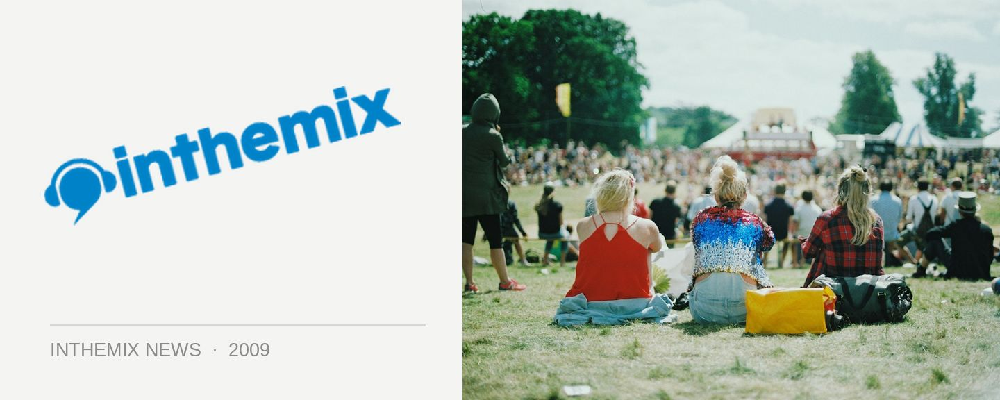

Prodigy's first sideshow smash - photos live on ITM
Old-skool UK rave terrorists The Prodigy may have hit the Boiler Room stage on Sunday evening, but last night a crowd in Brisbane had the trio all to themselves at the first of the ITM presented sideshows. Just how excited are we to have them in the country again? Check out the photos of everything that went down…
> The Prodigy, Brisbane photos
So did they live up to expectations? According to the talk in the Queensland forums, the answer is a resounding ‘yes’. “We have a new winner folks. Best live show ever. Yes even toppling Daft Punk for all round energy and performance.” Looks like the remaining cities have something exciting to look forward to…
To have a chat with the anarchists themselves have a listen to our recent Audio Interview, and for more info on the Big Day Out tour check out ITM’s Festival Page.